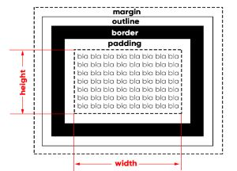
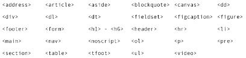
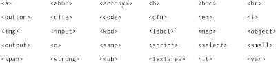

Modelo de caixa:
Anatomia de uma caixa:

Exemplo:
EXEMPLO
Margem automática
Para que as margens se tornem automáticas é necessário o uso da seguinte declaração:
margin: auto;Tipos de Caixa
- Caixa do tipo block-level
- Sempre vai se iniciar em uma nova linha;
- Vai ocupar a largura totao do elemento onde ele está contido;
- Se não estiver contido em nenhuma outra caixa, ele vai ocupar 100% da largura do body.
- 
- Caixa do tipo inline-level
- Não vai começar em uma nova linha, e sim no ponto exato onde foram definidos;
- O tamanho dele vai ocupar apenas o tamanho relativo ao seu conteúdo.
- 